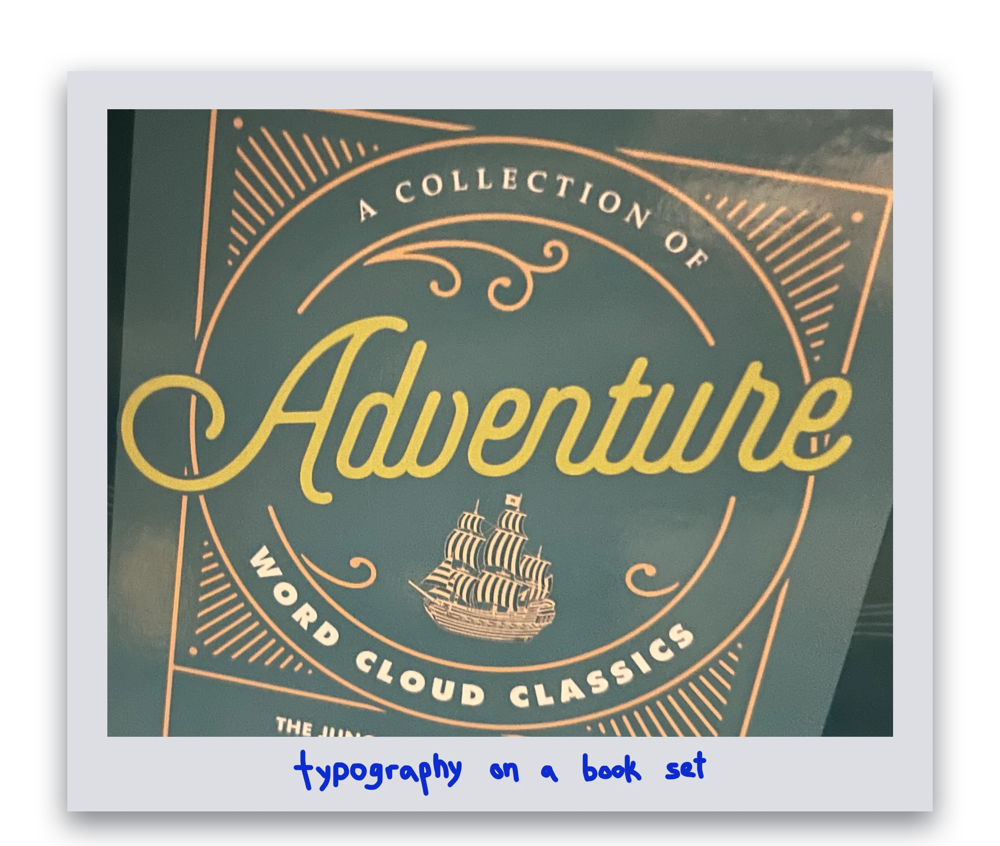
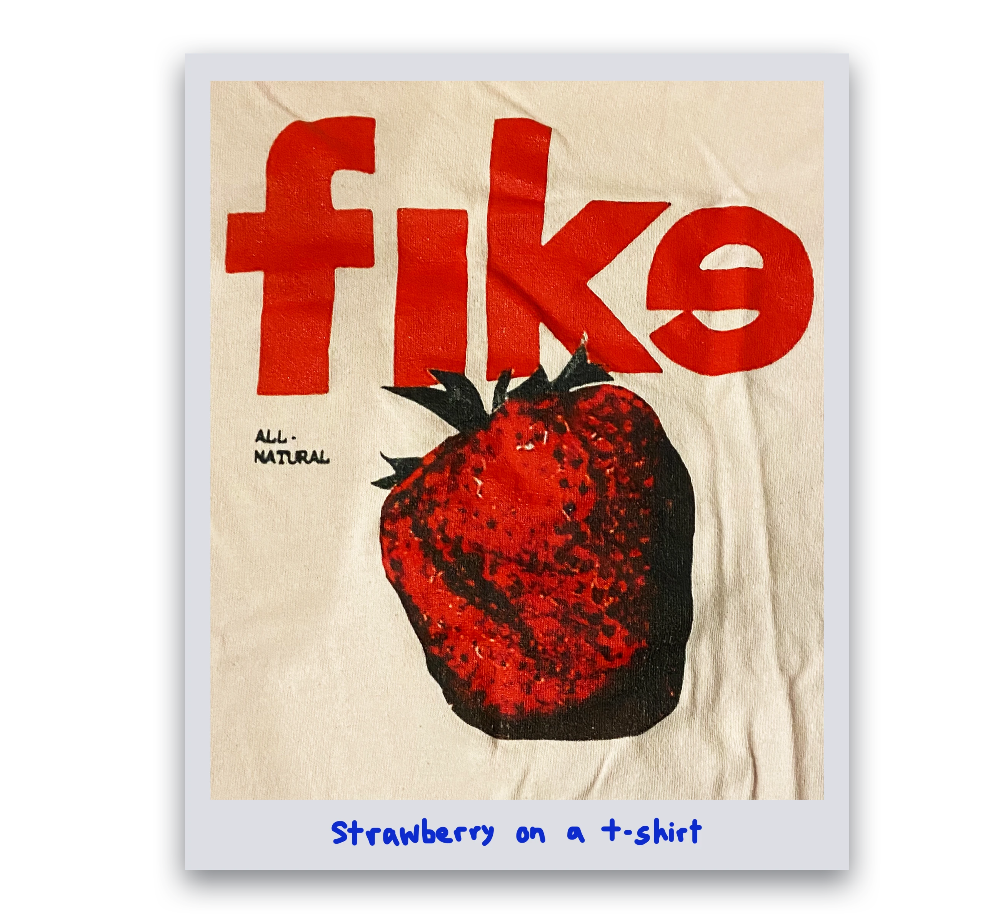
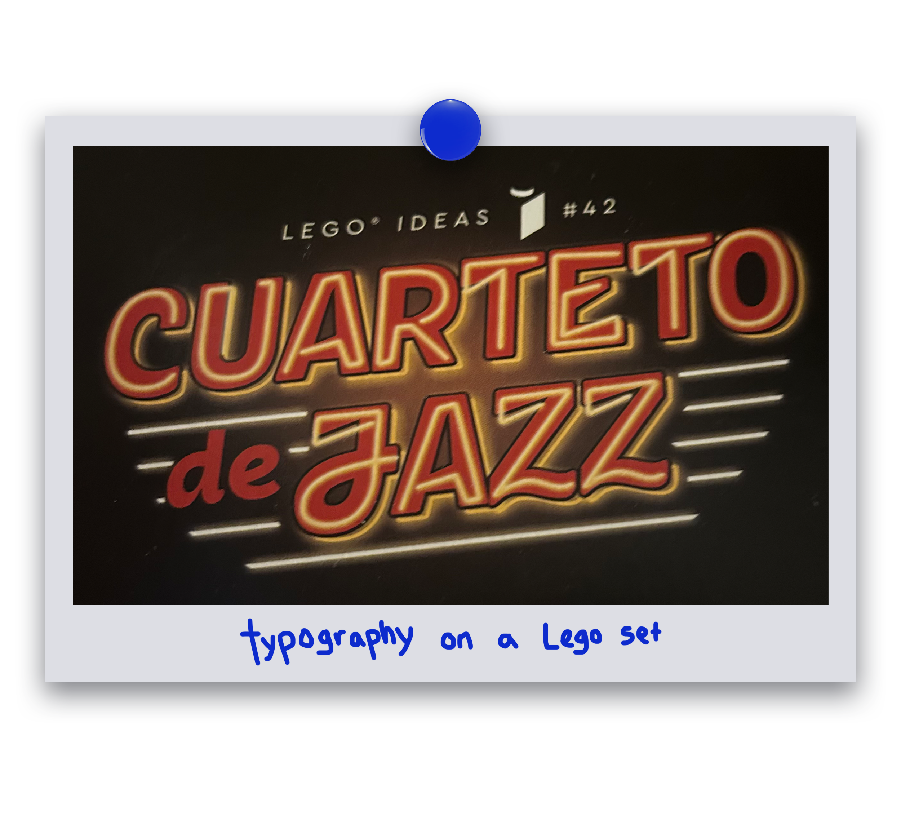
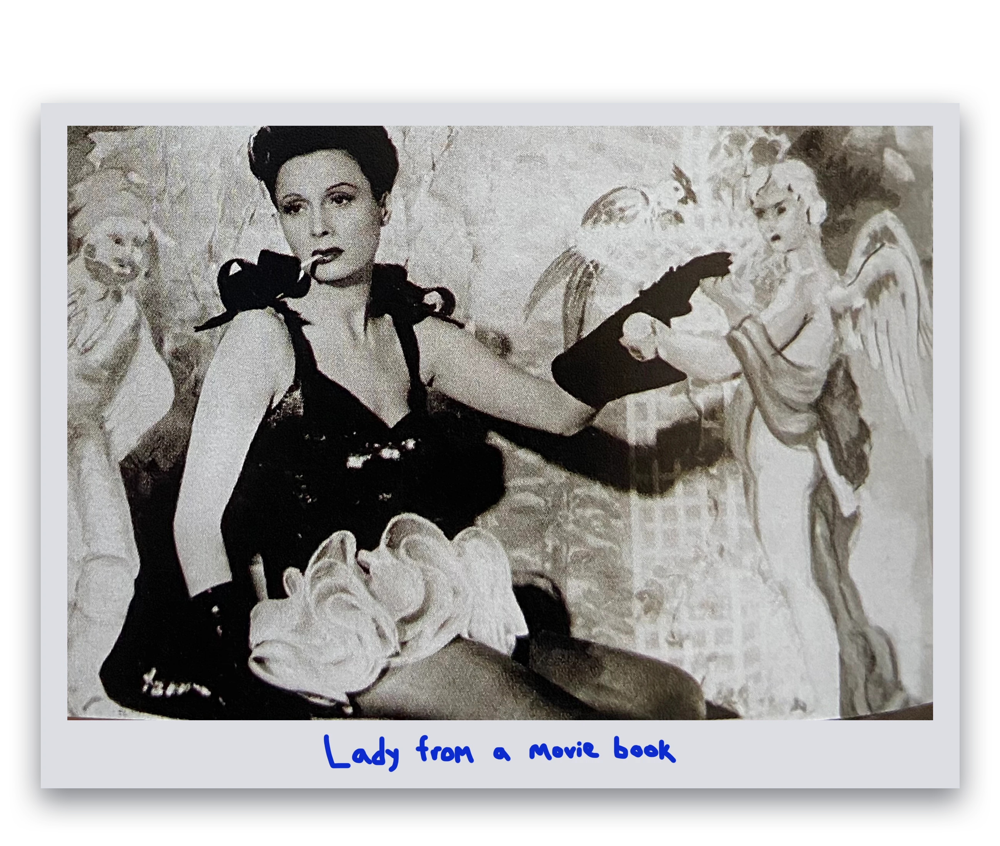
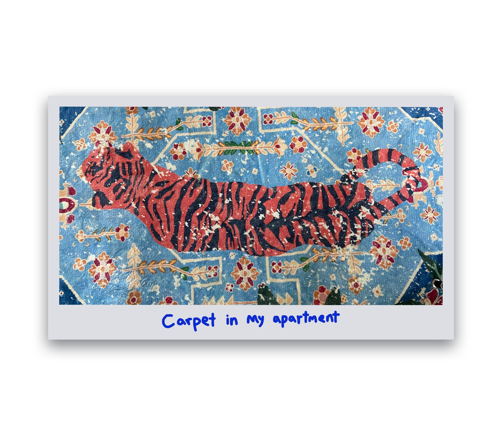
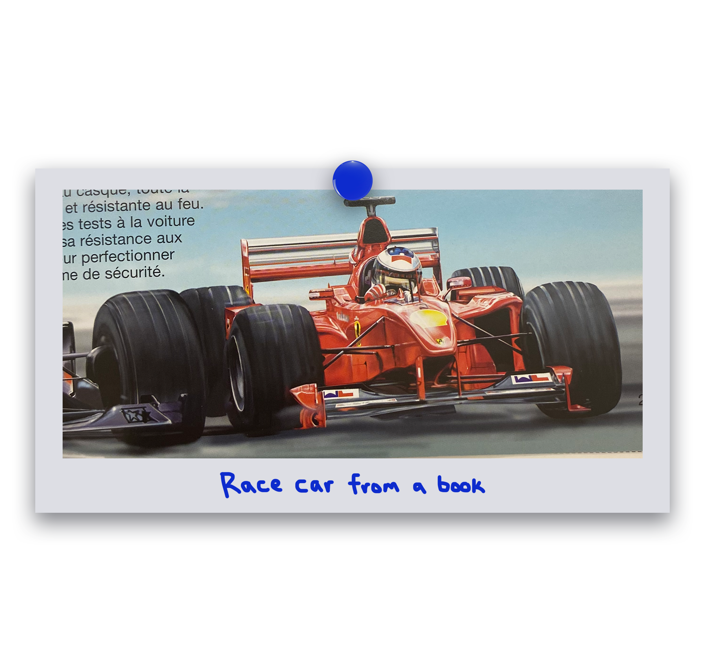

WHERE'S
INSPO?
MAGAZINE
2024.11.28









THE MAGAZINE
The final 8 page magazine.
I had so much fun making this project. Without the stress of designing with meaning and making the graphics look
clean and sharp, I did whatever I thought looked interesting.
I learned a lot about my personal design style and why I like designing. It brought some of the whimsy back to my
otherwise very "corporate-clean" projects I did for this introduction to design course.
During this process I also learned a lot about what sketching methods work best for me like having a notebook on
my bedside table to quickly get my ideas on paper, which is now common practice for me.
COLLECTING INSPO
The first step was to collect design inspirations I thought I could use. Whatever looked interesting,
I took a picture of and added to a master Jam Board.
As I found more and more interesting designs, I also
thought of items I had back home that I could use like book covers and posters. I called my brother
many times to ask him to take pictures for me (which he found quite tiresome after the fifth time).
Another very helpful source of inspiration was my mom's school library where she works. I had access to
hundreds of books there and was able to find intricate patterns and textures. Once all my inspo was
collected I was ready to start planning the overall style for the project. Funny enough, I only ended up
using a fifth of all the pictures I took.
STYLE PLANNING
While looking for design inspirations, I found at my mom’s school library a copy of the Little Prince which I had read when I was younger. Seeing it in person brought back memories my favourite scene where the narrator recalls drawing a picture and having to explain that:
"My drawing was not a picture of a hat. It was a picture of a boa constrictor digesting an elephant... The grown-ups were not able to understand it... They always need to have things explained."
- Antoine de Saint-Exupéry in The Little Prince, page 4, 1943
That sparked my the whole concept of this magazine: design without meaning.
Throughout my highschool design courses, I was always told to design with purpose. Every decision needed to mean something.
Child-like imagination was lost and replaced with a “corporate-clean” aesthetic. So, I decided to challenge
myself and from a hat make a boa constrictor eating an elephant, reimagine my design inspirations into
something unexpected. Rekindling that sense of wonder and imagination. The graphics do not need to be
clean or mean anything, just designing for fun.
From there, I decided on a colour palette with bold bright colours that I think represent the bold chaotic child-like
I was going for. I started planning layouts and what would roughly be on each page, as well as sifting through the
design inspo pictures to find what interesting pieces I could repurpose into new compositions.
SKETCHES
This is without a doubt the stage that took me the longest. I knew I wanted a collage style with rough cuttings of the images
for rough imperfect look. But actually finding creating fresh compositions was more difficult than I thought because the graphics
still needed to "look good." Finding, that balance was the most difficult part of this project.
One problem I had was that I always started getting the best crazy ideas when laying down in bed for the night and would forget them
by morning. To solve this, I slept for a full week with a sketchbook on my bedside table so I could sketch them out.
MAKING IT DIGITAL
Turning all my crazy sketches into digital images took some time. The first step was creating a magazine template in InDesign
to get a sense of the width and height I wanted for my images and where each text section would go.
Next, using a blend of
Photoshop and Illustrator, I first made the general layout then cropped and layered the images to get that rugged, imperfect collage look.
Once I was satisfied with the positioning, I moved on to adding colour filters to make the image more cohesive and on
theme with my colour palette.
Lastly, I exported the graphic into InDesign where I added the text and backgrounds.
During this project I also experimented with many Photoshop effects I had never tried before like the inverse colour filter and adding
image filters like artistic strokes to make it look cartoonish or glass effects which was pretty fun.